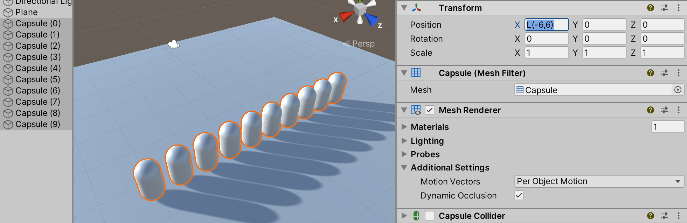
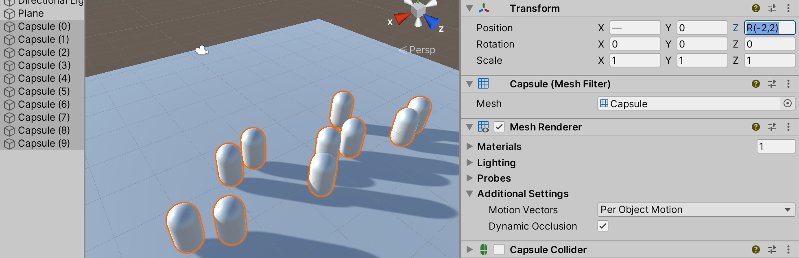
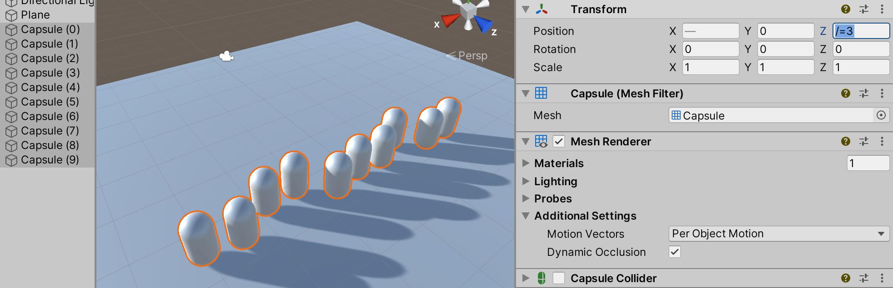
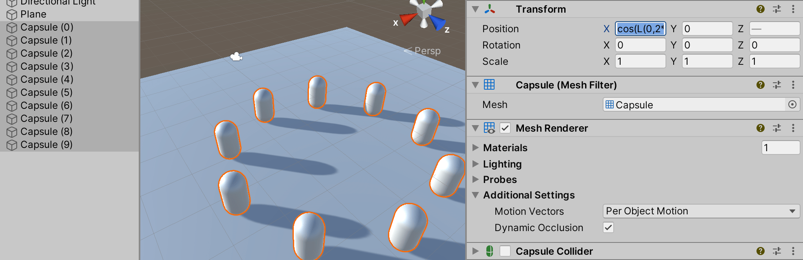

Editing properties
Properties are settings and options for GameObjectThe fundamental object in Unity scenes, which can represent characters, props, scenery, cameras, waypoints, and more. A GameObject’s functionality is defined by the Components attached to it. More info
See in Glossary components and Assets. You edit properties in an Inspector window.
Properties fall into the following major categories:
- References: links to other GameObjects and Assets.
- Values: numbers, colors, on/off settings, text, and so on.
References
Reference properties take compatible Project Assets or GameObjects in the SceneA Scene contains the environments and menus of your game. Think of each unique Scene file as a unique level. In each Scene, you place your environments, obstacles, and decorations, essentially designing and building your game in pieces. More info
See in Glossary as inputs. For example, the Mesh FilterA mesh component that takes a mesh from your assets and passes it to the Mesh Renderer for rendering on the screen. More info
See in Glossary component refers to a MeshThe main graphics primitive of Unity. Meshes make up a large part of your 3D worlds. Unity supports triangulated or Quadrangulated polygon meshes. Nurbs, Nurms, Subdiv surfaces must be converted to polygons. More info
See in Glossary Asset somewhere in the Project.
When you create a component, its reference properties are unassigned.

You assign references to properties by dragging and dropping objects and Assets onto reference property fields, or using an Object Picker window.
Some reference properties accept specific types of components (for example, Transform). When you assign a GameObject to those properties, Unity locates the first component of the required type on the GameObject, and assigns it to the reference property. If the GameObject doesn’t have any components of the right type, you cannot assign the GameObject to the property.
Assigning references by dragging and dropping
To assign a reference to a property, drag and drop a compatible GameObject or Asset onto the property field in the Inspector.
Assigning references with the Object Picker window
Use the Object Picker window to find and select a reference object to assign.

- Click the small circle icon to the right of the property in the Inspector to open an Object Picker window.
- Find the object or Asset you want to reference, and double click it to assign it to the property.
Values
You edit most value properties using simple controls. For example:
Fields where you enter text and numeric values.

You can type numeric values directly in a property field, or click and drag the property label to increase and decrease the value.
Some properties also have sliders for adjusting numeric values.
Check boxes where you toggle properties on and off.
Drop-downs and pop-ups where you choose one of multiple possible values.
Numeric field expressions
Numeric field input controls also accept mathematical expressions, for example entering 2+3 into a field will
result in value 5. See ExpressionEvaluator C# class documentation for details on
which expressions are supported.
Numeric fields also support special functions that are useful when editing multiple selected objects at once:
-
L(a,b)results in linear ramp betweenaandb.

EnteringL(-6,6)into X coordinate distributes the ten selected capsules between –6 and 6. -
R(a,b)results in a random value betweenaandb.

EnteringR(-2,2)into Z coordinate sets the Z coordinate of the selected capsules to a random value between –2 and 2. -
+=,-=,*=,/=expressions can be used to modify the current value, for example entering*=2makes all the the field value twice as large.

Entering/=3into Z coordinate makes all Z coordinates 3x smaller.
You can combine math expressions. For example, you could use the expression, L(0,2*pi), which produces a
linear distribution of values between 0 and 2pi radians, as the argument of a trigonometric function.
To illustrate, the following example uses this linear ramp function as the argument to sine and cosine functions
in order to distribute a set of selected objects in a circle:

Entering cos(L(0,2*pi))*5 into X and sin(L(0,2*pi))*5 into Z coordinates places the ten selected capsules in a circle.
When writing custom inspectors, all EditorGUI.PropertyField and EditorGUILayout.PropertyField controls automatically get support for the numeric expressions.
Some GameObjects and Assets have more complex properties that you edit with specialized controls or dedicated editors. The rest of this section describes how to set these complex properties.
Note: Constrain Proportions Scale does not support math expressions for multi-selection.
Color values
The Inspector window displays color properties as swatches.

Click any swatch to open a color picker or an HDRhigh dynamic range
See in Glossary color picker, depending on the context. For example, Unity displays the HDR Color Picker window when you edit the emission color property in the standard shader.

You can also use the eyedropper tool to pick color values from anywhere on the screen.

To pick a color, click the eyedropper button next to a color property, then click anywhere on the screen. Unity sets the color property to the color of the pixelThe smallest unit in a computer image. Pixel size depends on your screen resolution. Pixel lighting is calculated at every screen pixel. More info
See in Glossary you clicked.
You can save the colors you set in reusable swatch libraries that you can share between projects.
Gradient values
A gradient is a visual representation of a color progression. They are useful for blending one color gradually into another, over space or time.
In Unity, gradient values are used by the particle systemA component that simulates fluid entities such as liquids, clouds and flames by generating and animating large numbers of small 2D images in the scene. More info
See in Glossary, line rendererA component that takes an array of two or more points in 3D space and draws a straight line between each one. You can use a single Line Renderer component to draw anything from a simple straight line to a complex spiral. More info
See in Glossary
and a few other components. You can also have public Gradient class variables in your
C# scriptsA piece of code that allows you to create your own Components, trigger game events, modify Component properties over time and respond to user input in any way you like. More info
See in Glossary, and the inspector will display a gradient editor for them.

The gradient editor shows the main colors, called keys, and all the intermediate shades between them in the gradient bar (1).
Upward-pointing arrows along the bottom of the gradient bar represent color keys (2).
- Click a key to select it. Unity displays its color value in the Color field.
- Click the color swatch (3) to edit the color using a standard color picker.
- You can also use the eyedropper tool (4) to pick color values from anywhere on the screen. Click the eyedropper button then click anywhere on the screen. Unity sets the color property to the color of the pixel you clicked.
- Click an empty area under the gradient bar to add a key.
- Click and drag a key to move it.
- To delete a key, select it and use the Ctrl/Cmd + Delete shortcut.
Downward-pointing arrows above the gradient bar represent alpha keys (5) that control the gradient’s transparency at a given point. You add and edit alpha keys the same way you edit color keys. When you select an alpha key, the gradient editor displays an Alpha slider instead of the Color field.
By default, a gradient has two keys set to 100% alpha, which makes the gradient fully opaque. You can edit a key to adjust the transparency, and add additional keys as needed.
A gradient can use several different color interpolation modes:
- Blend mode linearly interpolates between the color keys.
- Blend (Perceptual) mode interpolates between the color keys using a perceptually uniform “Oklab” color space.
- Fixed mode does not interpolate the colors; the value of the color or alpha key is used until the next key.
Curves
A Curve is a line graph that shows the response (on the y axis) to the varying value of an input (on the x axis).
Unity uses curves in a variety of different contexts, especially in animation. Curve editors have a number of different options and tools. For details, see Editing Curves.
Bar sliders
A bar slider is a specialized control that lets you allocate a particular resource visually. For example, the LOD Group component uses a bar slider to define transitions between GameObject LODThe Level Of Detail (LOD) technique is an optimization that reduces the number of triangles that Unity has to render for a GameObject when its distance from the Camera increases. More info
See in Glossary levels.
You adjust the relative values of each segment in the bar by dragging the segment edges. Some bar sliders also have draggable handles.
Arrays
When a script exposes an array as a public variable, the Inspector displays a control that lets you edit both the number of items in the array (Size) and the values or references within it.

When you decrease the Size value, Unity removes values from the end of the array. When you increase the Size value, Unity copies the current last value into all the new elements it adds.
| Tip: |
|---|
| To set up an array whose values are mostly the same, add the first element and then change the size to copy its value to subsequent elements. |
Creating swatch libraries
Use swatch libraries to reuse, save, and share colors, gradients, and animation curvesAllows you to add data to an imported clip so you can animate the timings of other items based on the state of an animator. For example, for a game set in icy conditions, you could use an extra animation curve to control the emission rate of a particle system to show the player’s condensing breath in the cold air. More info
See in Glossary. You can save and choose swatches in the Color Picker, Gradient Editor, and Curve Editor.
A swatch library is a collection of swatches that you save in a file. The Swatches section displays a single library at a time.
To save a swatch:
- Open the Color Picker, Gradient Editor, or Curve Editor. For example, select Main Camera in the Hierarchy window.
- In the InspectorA Unity window that displays information about the currently selected GameObject, asset or project settings, allowing you to inspect and edit the values. More info
See in Glossary window, click Background Color. - In the picker window, adjust the color, gradient, or curve to your liking.
- In Swatches, click the outlined box.
- If the view is in List mode, optionally type a name for the swatch.

Drag and drop swatches to change their order. Right-click a swatch to move it to the top, replace it, rename it, or delete it. You can also delete a swatch by Alt/Option-clicking it.
Use the drop-down menu in Swatches to:
- Choose List or Grid to change the view. The List view also displays the names of swatches.
- Choose a swatch library.
- Choose Create a Library to create a new swatch library and the location to save it in.
- Choose Reveal Current Library Location to view the current library in Windows Explorer/Mac OS Finder.
By default, Unity saves swatch libraries in your user preferences. You can also save a swatch library in your Project. Unity saves Project swatch libraries in the Editor folder of the Assets folder. To share Project swatch libraries between users, or to include them in a package, add them to a revision control repository.
To edit a Project swatch library:
- Select the swatch library in the ProjectIn Unity, you use a project to design and develop a game. A project stores all of the files that are related to a game, such as the asset and Scene files. More info
See in Glossary window. - In the Inspector window, click Edit.
- Reorganized Inspector section pages in Unity 2020.1